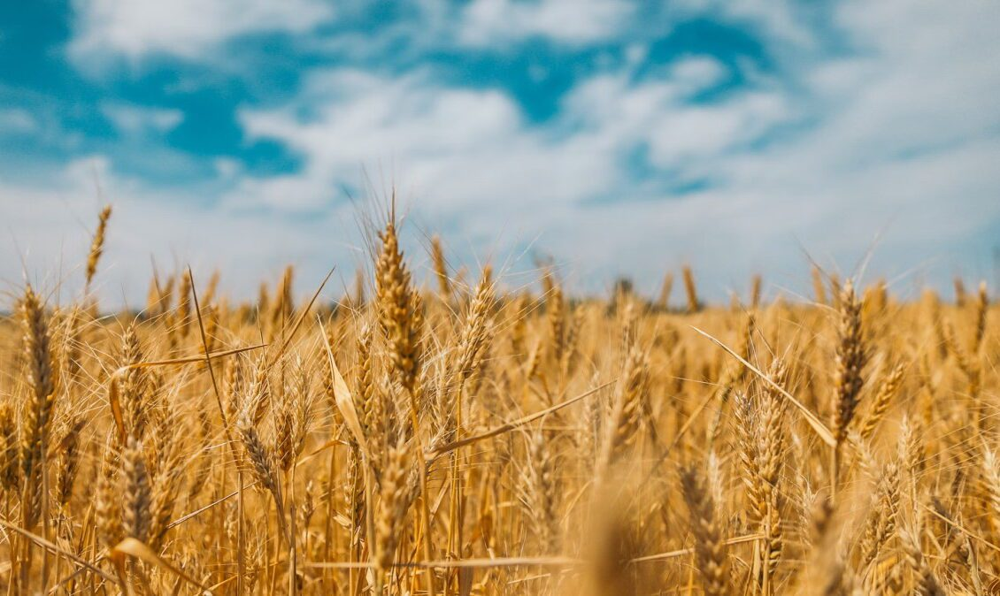
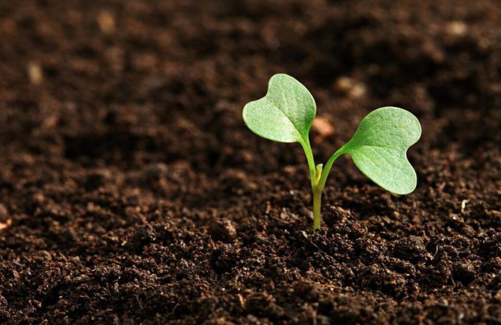
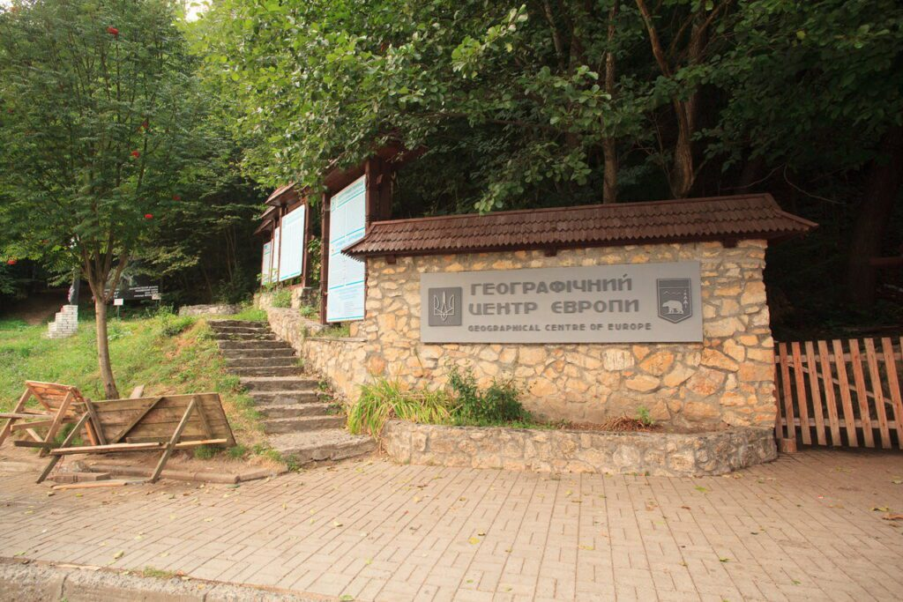
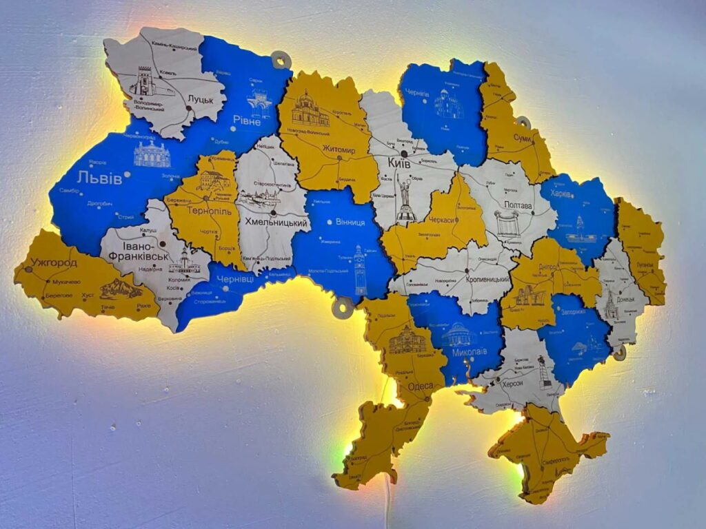
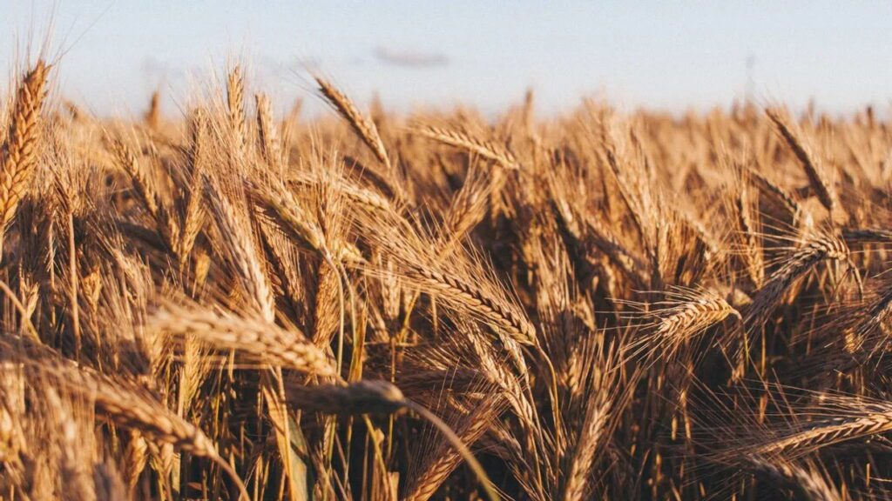
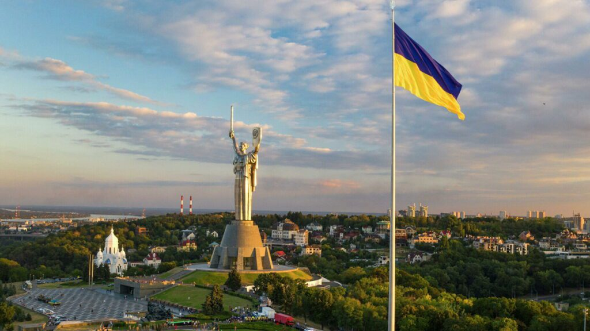
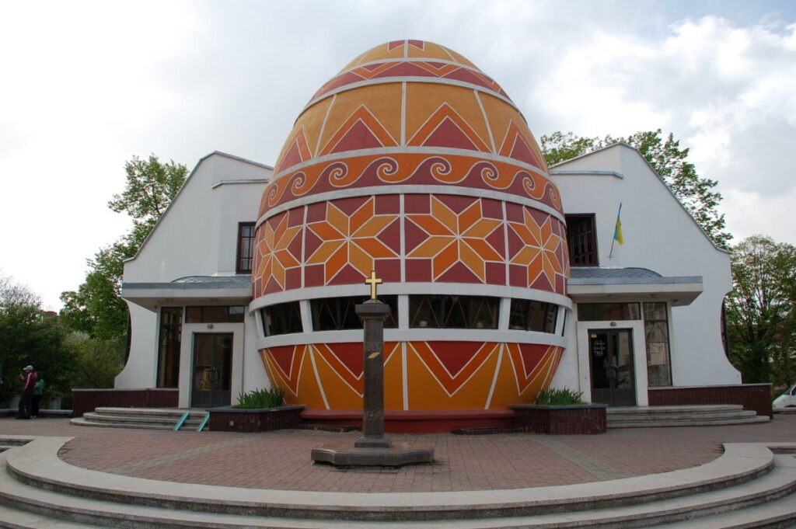
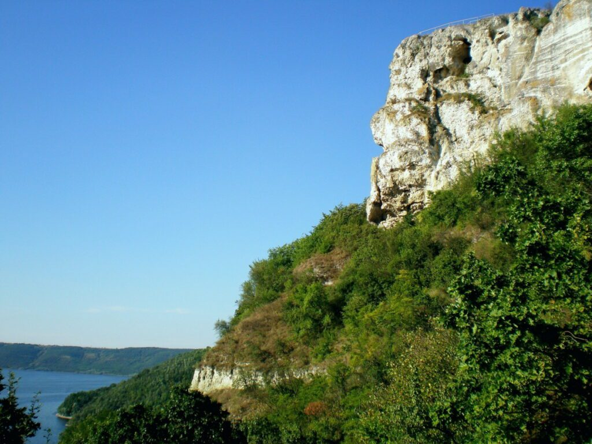
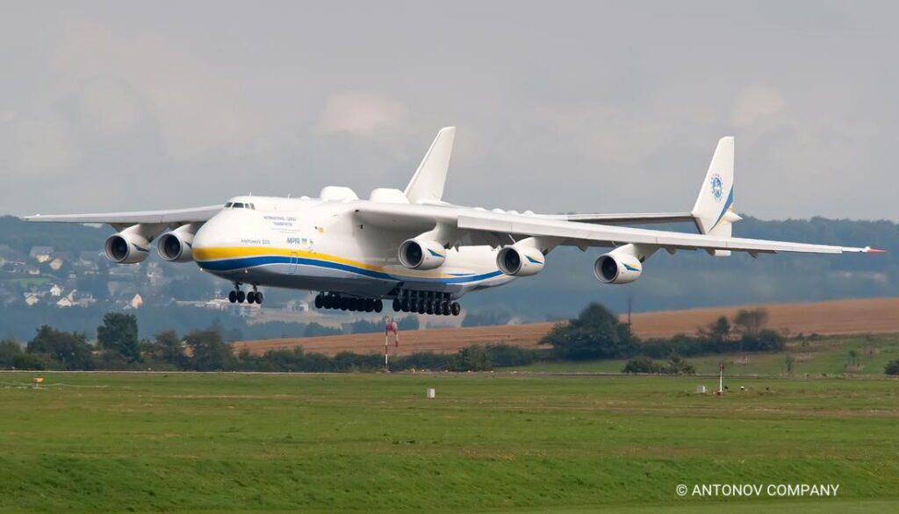
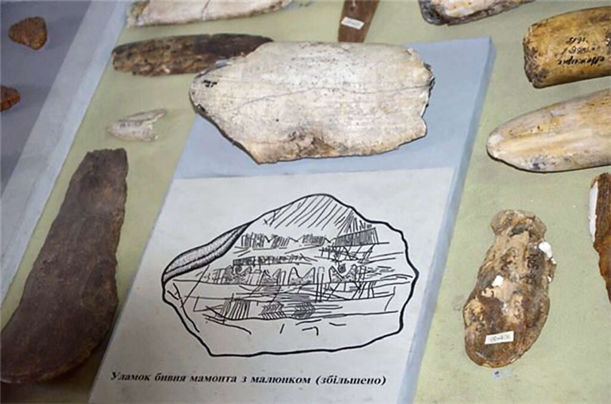

10 цікавих фактів про Україну, які роблять її унікальною
Зміст
- Факт 1: Українські чорноземи
- Факт 2: Центр найдавнішого
континенту
- Факт 3: Україна – більша, ніж ви
думаєте
- Факт 4: Годувальниця світу
- Факт 5: Київ –
місто, де
історія зустрічається з майбутнім
- Факт 6: Писанка – код нації у
візерунках
- Факт 7: Подільські Товтри –
гори,
створені морем
- Факт 8: Українська Мрія – небесний
велетень
- Факт 9: Борщ – більше ніж просто
страва
- Факт 10: Карта на
бивні
мамонта – найстаріша мапа людства
Україна-ненька… Така рідна серцю, така безмежна у своїй красі та багатстві! Ми виростаємо на її теплих
долонях, вивчаємо її
історію за шкільною партою,
відкриваємо для себе нові куточки під час подорожей, і щоразу
дивуємось – скільки ж у ній неймовірного та незвіданого! Кожен регіон, кожне місто і навіть
найменше
село береже
свої
унікальні традиції, історії та дива. Ми часто навіть не замислюємось, яка особлива наша земля, скільки
всього вона подарувала світові,
чим дивує і захоплює людей з різних куточків планети. Розповісти про все
унікальне в Україні просто неможливо – це як намагатися перелічити зорі
на нічному небі. Але сьогодні
ми
виділимо 10 особливих фактів, які ще раз нагадають нам, чому наша країна – така неповторна.
Факт 1: Українські чорноземи

Уявіть собі, що десь далеко люди намагаються щось виростити на піску чи камінні, а в нас під ногами –
справжній скарб. Кожен четвертий кілограм найродючішої
землі у світі – чорнозему – знаходиться саме в
Україні! Якщо взяти лопату й копнути землю, то в багатьох місцях можна побачити шар чорнозему завтовшки як
зріст
першокласника. Цей ґрунт такий особливий, що на ньому росте все: від маленької морквини на
бабусиному
городі до величезних пшеничних полів, які годують людей
по всьому світу.
Факт 2: Центр найдавнішого континенту

Європа – це 44 країни, понад 700 мільйонів людей, тисячі різних мов та традицій, величезна територія від
Атлантичного океану до величних гір. І знаєте, де
знаходиться центр цього дивовижного континенту? В
Україні!
У маленькому селі Ділове на Закарпатті стоїть старовинний знак, встановлений австрійськими
вченими ще у
1887
році. Вони довго вимірювали, рахували й дійшли висновку – саме тут б’ється серце Європи.
Факт 3: Україна – більша, ніж ви думаєте

Наша країна така велика, що могла б вмістити кілька європейських держав? Наприклад, Закарпатська
область за
розміром як Чорногорія,
Львівська – як пів Бельгії, а Одеська область більша за Данію! І в кожному
такому
“шматочку” України – свої традиції, говірки, кухня та звичаї. Подорожуючи
від Ужгорода до
Харкова, ви
ніби
відвідуєте різні країни: тут і гори з полонинами, і безкрайні степи, і морські узбережжя, і дрімучі ліси.
Лише уявіть:
щоб перетнути Україну на машині із заходу на схід, потрібно їхати довше, ніж з Парижа до
Берліна!
Факт 4: Годувальниця світу

Важко повірити, але наша країна щороку вирощує стільки зерна, що могла б нагодувати 400 мільйонів людей – це
як населення всієї Південної Америки!
Кожен десятий хліб у світі випечений з української пшениці, а
кожна
четверта тарілка кукурудзяних пластівців на сніданок – теж з нашого зерна.
В Україні стільки родючих
полів,
що їхня площа більша за територію Великої Британії. І це не просто цифри – це результат важкої праці наших
фермерів,
які не тільки забезпечують їжею українців, але й допомагають нагодувати мільйони людей від
Єгипту
до Китаю.
Факт 5: Київ – місто, де історія зустрічається з майбутнім

Наша столиця настільки особлива, що навіть метро тут – унікальне! Станція “Арсенальна” – найглибша у світі,
до її платформи потрібно спускатися
аж на 105 метрів під землю. Це як 30-поверховий будинок, тільки під
землею! А ще Київ – одне з найзеленіших міст Європи, тут більше парків і скверів,
ніж у Парижі чи
Берліні.
Саме в Києві збудували перший в Європі комп’ютер, а зараз наше місто входить у топ-5 міст світу за кількістю
IT-спеціалістів.
От така вона, наша столиця – древня і водночас надсучасна!
Факт 6: Писанка – код нації у візерунках

Українська писанка – це не просто розмальоване яйце? Це справжня мова символів, яка передавалася з покоління
в покоління тисячі років! У маленькому
місті Коломия є унікальний музей – єдиний у світі Музей писанки.
І
сама будівля музею має форму велетенського яйця – 14 метрів заввишки! Це як
п’ятиповерховий будинок. В
музеї
зберігається понад 12 тисяч писанок з різних куточків України та світу. Кожен візерунок на писанці має своє
значення:
сонечко – це життя, пташка – весна і свобода, безкінечник – вічність. А ще цікаво, що техніка
розпису писанок така складна, що майстрині можуть
працювати над одним яйцем кілька днів!
Факт 7: Подільські Товтри – гори, створені морем

Уявіть собі місце, де можна одночасно торкнутися морського дна і стояти на вершині гори! Неможливо? В
Україні є таке диво – Подільські Товтри. Колись,
25 мільйонів років тому, тут вирувало тепле тропічне
море з
кораловими рифами. Час минав, море відступило, а коралові рифи перетворилися на казкові
гори, що
простяглися
на 250 кілометрів! Сьогодні це найбільший природний парк України. Гуляючи древніми вершинами, можна знайти
скам’янілі мушлі
давніх молюсків, помилуватися рідкісними квітами, яких більше ніде у світі немає.
Факт 8: Українська Мрія – небесний велетень

Найбільший літак у світі був створений саме в Україні?Так, так саме в Україні. Це легендарний Ан-225, якого
назвали “Мрія”. І це справді була мрія!
Уявіть собі літак такий величезний, що міг перевозити у своєму
“череві” 200 легкових автомобілів одночасно. Його довжина – як два футбольні поля, а розмах
крил
більший за
футбольне поле! Коли “Мрія” злітала, весь світ завмирав від подиву – як така величезна машина може піднятися
в небо? Він встановив понад
200 світових рекордів, а інженери з різних країн приїжджали до України, щоб
побачити це диво техніки. Хоч “Мрії” вже немає з нами, але вона назавжди залишиться
символом того, що
українці вміють створювати неможливе.
Факт 9: Борщ – більше ніж просто страва
Український борщ визнаний ЮНЕСКО культурною спадщиною людства? І це не дивно! Адже це не просто смачний суп,
це справжній символ української
гостинності та родинного затишку. У кожному регіоні, в кожній родині є
свій
особливий рецепт, який передається з покоління в покоління як найцінніший скарб.
Загалом існує понад 70
різних рецептів!
А ще цікаво те, що борщ давно став “смачною візитівкою” України у світі. Жоден турист не покидає нашу
країну, не скуштувавши цієї страви. А коли українці їдуть
за кордон навчатися чи працювати, їх
обов’язково
просять приготувати… так саме борщ! І байдуже, чи це Америка, чи Японія, чи Австралія – всюди люди чули про
наш борщ і мріють його спробувати.
Факт 10: Карта на бивні мамонта – найстаріша мапа людства

Чи могли ви уявити, що найдавніша у світі карта була створена саме на території України? В селі Межиріч, на
Черкащині, археологи знайшли щось неймовірне
– мапу, вигравіювану на… бивні мамонта! Тільки уявіть: 15
тисяч
років тому, коли люди ще полювали на мамонтів, хтось із наших предків взяв бивень і старанно
вирізав на
ньому план місцевості. На цій прадавній карті можна розпізнати річку, пагорби та навіть житла тогочасних
мисливців. Це не просто малюнок – це найдавніший
доказ того, що люди вміли створювати й читати карти.
Виходить, що першими картографами в історії були саме давні жителі України!
І це лише маленька частинка того, чим багата наша земля. Кожного дня ми відкриваємо для себе щось нове про
рідний край, і щоразу переконуємося – Україна особлива.
Бо де ще знайдеш таку красу природи, такі
багаті
традиції й таких талановитих людей?